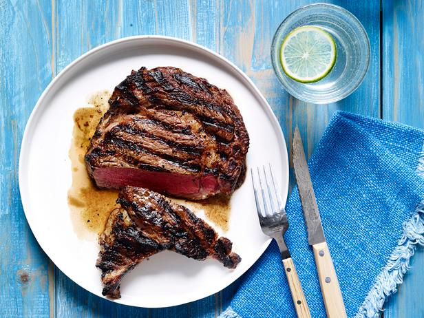

Steak

Description
A steak is a thick cut of meat generally sliced across the muscle fibers, sometimes including a bone. It is
normally grilled or fried.
Steak can be diced, cooked in sauce, such as in steak and kidney pie, or minced and
formed into patties, such as hamburgers.
Ingridients
- 20 ounces porterhouse steak
- 1 teaspoon olive oil
- 1 tablespoon meat tenderizer
- 1 teaspoon steak seasoning
Steps
- Place steak on a plate and coat lightly with olive oil. Rub steak with meat tenderizer. Sprinkle steak with
Canadian steak seasoning and gently rub into steak. Cover with plastic wrap and let stand for 20 minutes.
- Preheat a grill for high heat. When the grill is hot, lightly oil the grate.
- Unwrap steaks and grill on open flame or charcoal grill for 3 to 5 minutes per side, or to your desired degree
of doneness.
Return to the main page